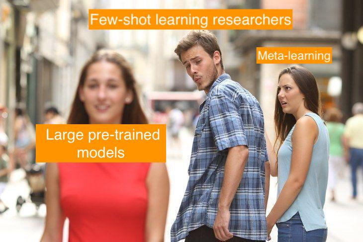

|
I am a Ph.D. candidate at UESTC, advised by Prof. Jingkuan Song. My research aims to bridge the gap between virtual AI and the physical world by developing general-purpose robots, focusing on the creation of generalist policies that empower them to robustly perceive, dynamically interact, and continuously adapt—ultimately enabling them to tackle any task, in any environment. Email / CV / Google Scholar / Github |
{kind=link}
|
|

|
Youguang Xing*, Xu Luo*, Junlin Xie, Lianli Gao, Hengtao Shen, Jingkuan Song CoRL, 2025 [PDF] [Website] Identifying shortcut learning as a key impediment to the generalization of generalist robot policies and providing a comprehensive analysis. |
|
Peng Gao*, Le Zhuo*, Dongyang Liu*, Ruoyi Du*, Xu Luo*, Longtian Qiu*, Yuhang Zhang, Chen Lin, Rongjie Huang, Shijie Geng, Renrui Zhang, Junlin Xi, Wenqi Shao, Zhengkai Jiang, Tianshuo Yang, Weicai Ye, Tong He, Jingwen He, Yu Qiao, Hongsheng Li ICLR, 2025 (Spotlight) [PDF] [Code] Text-to-any-modality models that generate images, videos, audio, and 3D multiview images conditioned on text in a flow-based diffusion framework, using novel Flag-DiT architectures with up to 5B parameters and 128K context windows. |

|
Xu Luo, Difan Zou, Lianli Gao, Zenglin Xu, Jingkuan Song arXiv, 2023 [PDF] Uncovering and analyzing extreme feature redundancy phenomenon of pretrained vision models when transferring to few-shot tasks. |
|
Ji Zhang, Lianli Gao, Xu Luo, Hengtao Shen, Jingkuan Song ICCV, 2023 [PDF] [Code] Proposing DETA--a framework that solves potential data/label noise in downstream few-shot transfer tasks. |
|  |
Xu Luo*, Hao Wu*, Ji Zhang, Lianli Gao, Jing Xu, Jingkuan Song ICML, 2023 [PDF] [Code] Empirically proving the disentanglement of training and adaptation algorithms in few-shot classification, and performing interesting analysis of each phase that leads to the discovery of several important observations. |

|
Jing Xu, Xu Luo, Xinglin Pan, Yanan Li, Wenjie Pei, Zenglin Xu NeurIPS, 2022 (Spotlight) [PDF] [Code] Revealing a strong bias caused by the centroid of features in each few-shot learning task. A simple method is designed to rectify this bias by removing the dimension along the direction of task centroid from the feature space. |

|
Xu Luo, Jing Xu, Zenglin Xu ICML, 2022 [PDF] [Code] Revealing and analyzing the channel bias problem that we found critical in few-shot learning, through a simple channel-wise feature transformation applied only at test time. |

|
Xu Luo, Longhui Wei, Liangjian Wen, Jinrong Yang, Lingxi xie, Zenglin Xu, Qi Tian NeurIPS, 2021 [PDF] [Code] Identifying image background as a shortcut knowledge ungeneralizable beyond training categories in Few-Shot Learning. A novel framework, COSOC, is designed to tackle this problem. |
|
Xu Luo, Yuxuan Chen, Liangjian Wen, Lili Pan, Zenglin Xu ICME, 2021 [PDF] [Code] Applying contrastive learning to Few-Shot Learning, with views generated in a learning-to-learn fashion. |
|
This well-designed template is borrowed from this guy |